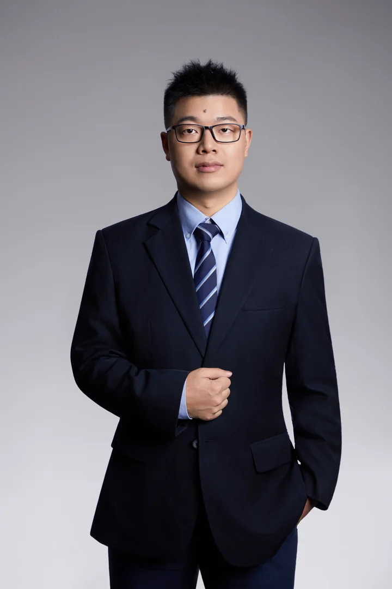

派能科技（688063.SH）
国内储能电池系统龙头企业，担任发行人签字律师，提供股改、合规核查及上交所科创板首发上市全程法律服务。
深圳 / SHENZHEN
资本市场律师法律 AI 实践者

自 2017 年起专注企业境内外 IPO、上市公司再融资与境内外并购重组业务，兼具工科机械训练与中英双语执业能力。日常工作中长期使用 AI 辅助尽调、检索与文书审查，并将实务方法沉淀为工作站教程、公众号文章、开源 Skills 与律所内外讲座。
上海市锦天城（深圳）律师事务所 · 资深律师
PRACTICE RECORD
执业 8 年+，主要在上海、深圳两地参与资本市场非诉、跨境交易及民商事争议解决，以下按五类业务整理全部代表案例。
国内储能电池系统龙头企业，担任发行人签字律师，提供股改、合规核查及上交所科创板首发上市全程法律服务。
半导体与平板显示掩膜版企业，担任保荐机构（主承销商）经办及签字律师，协助项目 2022 年科创板上市。
电子电路铜箔与覆铜板制造商，作为主承销商律师团队成员参与尽调核查与申报文件审校，协助创业板上市。
精密机械及摩擦焊设备企业，参与新三板合规及北交所公开发行法律服务，2026 年 6 月披露招股说明书（注册稿）。
光伏封装胶膜高新技术企业，担任发行人签字律师完成境内全面尽调、申报律师意见出具及多轮审核问询回复。
智能巡检机器人及机器视觉企业，参与规范整改、历史沿革及股权核查，并配合完成 A 股 IPO 上市辅导备案。
特种环氧树脂新材料制造企业，参与 A 股 IPO 法律尽职调查及上市辅导备案期间公司治理与合规规范工作。
分别主办或核心参与两家上海制造业及供应链服务企业股份制改造、历史沿革梳理与早期 IPO 法律尽职调查。
担任发行人主办律师，统筹定增项目尽职调查、募投项目与前募使用合规核查、法律意见书起草及问询回复。
精细化工钛白粉企业向不特定对象发行可转债，担任发行人签字律师完成申报核查，2022 年获中国证监会同意注册。
担任非公开发行股票项目发行人签字律师，承担发行条件核查、三会程序规范与法律意见书出具等全程工作。
代表收购方主办 29 亿元上市公司控制权收购暨重大资产重组，负责交易结构论证、法律尽调、交易文件起草与交割。
代表香港上市公司收购天津杰士电池及汤浅蓄电池（顺德）各 70% 股权，牵头尽调、中英文 SPA 谈判与工商交割。
代表上市公司收购消防应急照明企业左向照明相关股权，承担标的公司全面尽调、业绩对赌及交割条件设计。
代表深圳国资主体收购中兴通讯旗下三家标的公司股权，推进多主体法律尽调、资产剥离界定及国资交易落地。
代表奥海科技收购跨境电商与能源应用标的公司 49% 股权，协助开展标的尽职调查并完成收购协议审修签署。
典型“外转中”跨境股权转让交易，代表外方卖方主导交易协议谈判、跨境价款支付及税务外汇合规协调与交割。
作为投资方中国法律顾问，对目标集团境内运营及合规体系开展尽职调查，并审核修订全套英文股权投资交易文件。
智能驾驶解决方案供应商赴港上市，深度参与境内运营主体法律尽调、整改规范、问题清单闭环及问询回复支撑。
国际化卫生用品企业赴港上市，参与中国法律意见、非洲/拉美/中东等十余个法域意见与国际制裁审查协调。
担任拟赴港发行 H 股企业中国境内顾问核心成员，跟进特殊权利清理、历史沿革与证监会境外上市备案文件筹备。
代表承销商负责境内经营实体尽职调查与架构核查，协同境外律师及审计师审校美股秘密递表（DRS）中英文披露文件。
处理新加坡主体英文融资协议、创始人 37 号文外汇登记、开曼/BVI/香港架构治理、AB 股章程及境外股权激励计划。
主办半导体芯片设计企业境内重组、ODI 及境外股权调整，并参与建设工程企业港股 A1 及消费企业赴美上市专项。
协助工银亚投股权投资管理（深圳）发起设立合伙型基金，并取得深圳市地方金融监管局核发 QFLP 业务资格批复。
为人民币专项基金出境参与港股基石投资设计募集结构、ODI 审批额度、中基协备案及退出全流程法律合规路径。
为多家创投及产业基金管理人的拟投项目开展投前法律尽职调查并审修交易协议，另主办多个私募管理人登记专项。
代表在港中资银行就深港跨境不动产抵押出具中国法律意见书并见证登记；成功代理多起股权回购、商业秘密及商事诉讼。
LEGAL AI PRACTICE
把办案中的高频工序拆出来，写文章、做 Skills、开讲座、持续分享。
平时办理尽调、合同审查、证券审核回复与诉讼研究时，我把反复跑通的工作方法系统沉淀在文章专栏、个人公众号、公开 Skills 与所内外讲座里——不谈空泛概念，只留别人能直接照着用的真实作业流。
ai.licheng.uk，按从入门到落地的路线连载《AI 入门》（30 篇）、《AI 基建十步》（10 篇）、《AI 优先》（26 篇）与《AI 实战》（52 篇）。AGENTS 全局及专项指令（涵盖《法律业务通用指令》、IPO 股东穿透与流水核查、北交所三会文件起草、私募协议审阅等）。github.com/lennonli）维护 80+ 开源仓库，沉淀 14 个证券业务审核问询与法规知识库（覆盖 2,585 家企业，含 824 份补充法律意见书）及多数据源 MCP 接入实践。BACKGROUND
厦门大学法学院 · 法律硕士
南昌大学机械设计制造及其自动化 · 工学学士
上海市锦天城（深圳）律师事务所资深律师 · 工作语言：中文、英文
自 2017 年起主要在上海、深圳两地从事证券与资本市场、境内外并购重组、境外上市与跨境融资、私募基金及民商事争议解决业务。
Web3 / RWA 与资本市场实务研究
担任锦天城深圳分所《稳定币与 RWA 发行法律监管及交易架构研究》课题研究组组长；入选深圳律协「星火训练营」青年律师培养项目。